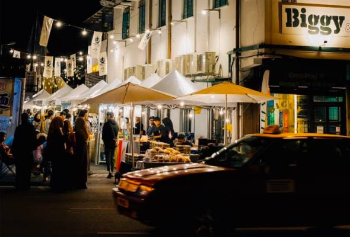
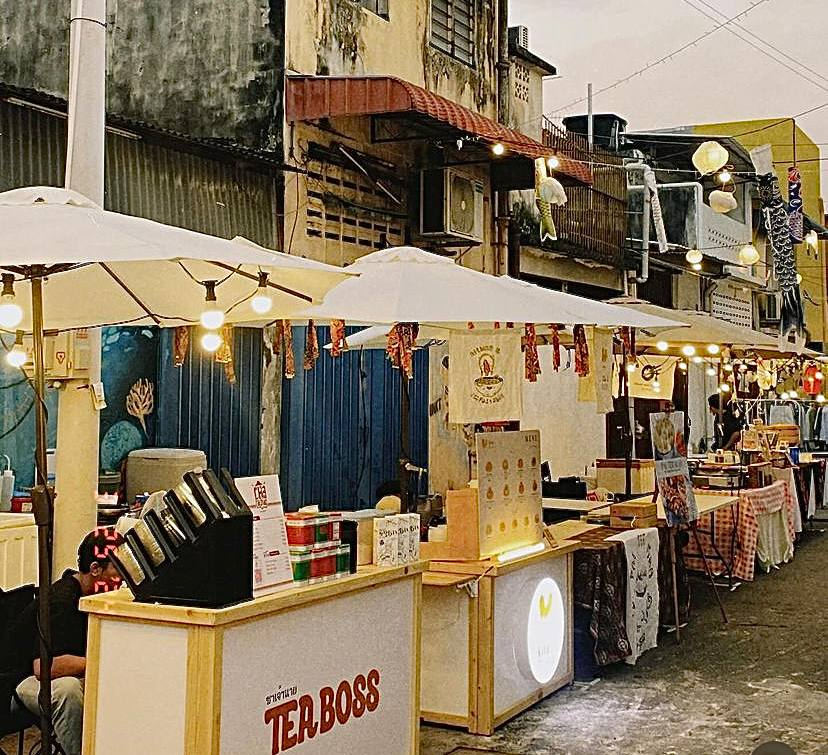
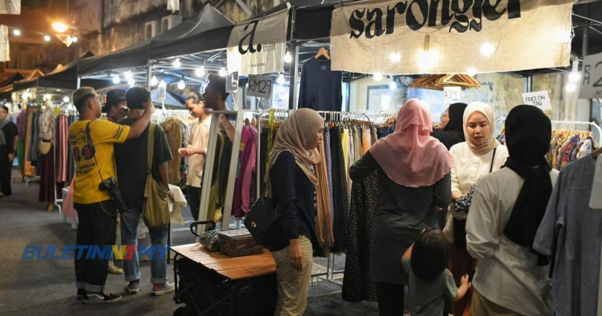

Home | About Us | Direction | Pricing | Contact Us |

Our Location
Retro Art Fest is a vibrant celebration featuring a diverse food fest, a preloved clothing section, a retro-themed photobooth, live music by buskers, and showcases of batik art and painting. It offers a nostalgic experience with various activities and attractions for attendees to enjoy.
The map of our location:

Click here for location: Biggy Street



The street plan of our event: